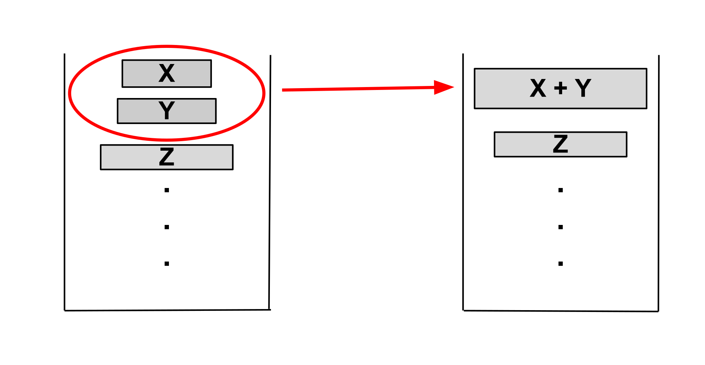

Tim sort
本页面将介绍 Tim 排序（Timsort），一种混合的、稳定的排序算法．
引入
Timsort 由 Python 核心开发者 Tim Peters 于 2002 年设计，并应用于 Python 语言，其巧妙结合了插入排序和归并排序的优点，针对数据集中的有序性进行了精确的优化，尤其适合处理包含大量部分有序子序列的数据集．自 Python 2.3 版本以来，Timsort 被选为 Python 标准库的默认排序算法，并被广泛应用于其他编程环境，例如在 Java SE 7 中被用于对非原始对象数组进行排序．
步骤
Timsort 的核心思想是通过识别和利用数据集中已有的有序性，提高排序效率，其主要包括以下步骤：
- 识别 Run：扫描待排序数组，识别出有序的连续子序列（Run）．
- 扩展 Run：如果识别的 Run 长度小于
MIN_RUN，则使用插入排序对其进行扩展． - 归并 Run：Timsort 维护一个特殊的栈，采用特定的归并策略将栈中已有的 Run 合并成更大的有序序列．
识别 Run
首先，Timsort 会从左向右扫描数组，识别出连续的有序序列，这些有序序列被称为 Run：
- 升序 Run：如果后一个元素大于等于前一个元素，则继续扩展 Run．
- 降序 Run：如果后一个元素小于前一个元素，则继续扩展 Run，随后将该 Run 反转为升序．
扩展 Run
为了提高小规模数据的排序效率，Timsort 引入了一个 Run 最小的长度 MIN_RUN．其值一般根据待排序数组的长度动态计算，通常为 $32$ 至 $64$ 之间．
- 如果识别的 Run 长度大于等于
MIN_RUN，则不需要额外操作，直接将 Run 压入栈中． - 如果识别的 Run 长度小于
MIN_RUN，则使用二分插入排序将该 Run 的后续元素插入到 Run 中，直到 Run 的长度达到MIN_RUN，然后将其压入栈中．
归并 Run
在 Timsort 中，归并排序是通过 栈 来管理和控制的．栈中保存了已经识别出的有序的 Run，并通过特定的归并规则控制栈中 Run 的合并，其目的是在合并时保持序列的平衡性和稳定性．
归并规则
Timsort 是一种稳定的排序算法，即相同元素在排序后仍然保持原有的相对顺序．为确保这一点，Timsort 在归并时只会合并相邻的、连续的 Run，而不会直接合并非相邻的 Run．因为非相邻的 Run 之间可能存在相同的元素，直接合并很有可能会打乱它们的相对顺序．
同时，为了确保合并的平衡性，Timsort 引入了特定的归并规则．在每次合并操作之前，算法会检查栈顶的三个 Run X、Y 和 Z，以确保满足以下两个条件：
- 条件一：
len(Z) > len(Y) + len(X) - 条件二：
len(Y) > len(X)
如果栈顶的三个 Run 不满足上述条件，Timsort 会将 Y 与 X 或 Z 中较小的一个进行合并，然后再次检查条件．一旦条件满足，则开始继续搜索新的 Run，将其添加到栈中并开始下一轮的归并．

归并优化
为了在归并不同长度的 Run 时提高效率并减少空间开销，Timsort 在归并前会通过二分查找精确定位需要处理的元素范围，只对需要移动的部分进行归并，具体方式为：
-
确定插入点：使用二分查找，找到第二个 Run 的第一个元素在第一个 Run 中的插入位置，以及第一个 Run 的最后一个元素在第二个 Run 中的插入位置．这样，可以缩小需要归并的范围，只对需要移动的元素进行处理．
-
临时缓冲区：传统的原地合并算法效率太低，需要大量的元素移动．为了减少这种开销，Timsort 使用一个临时缓冲区，将长度较小的 Run 复制到缓冲区中，然后逐步将元素从缓冲区复制回原数组．
例如，假设存在两个 Run A 和 B，分别为：
- Run A:$[1, 2, 3, 6, 10]$
- Run B:$[4, 5, 7, 9, 12, 14, 17]$
通过二分查找，可以确定：
- 元素 $4$ 应插入到 Run A 的第四个位置．
- 元素 $10$ 应插入到 Run B 的第五个位置．
因此，Run A 的前 $3$ 个元素和 Run B 的后 $3$ 个元素已经在正确位置，无需处理．只需归并 Run A 的 $[6, 10]$ 和 Run B 的 $[4, 5, 7, 9]$，其归并过程如下图所示：

加速模式
为进一步提升归并效率，Timsort 引入了 加速模式（Galloping Mode）．在标准的归并过程中，算法会逐一比较两个 Run 中的元素，将较小的元素放入结果数组．然而，如果一侧的 Run 中有大量连续元素比另一侧的当前元素要小，逐一比较会造成不必要的开销．
为了解决这一问题，Timsort 设定了一个阈值 Min_Gallop（默认值为 $7$）．当一侧 Run 中的元素连续比较胜利的次数达到 Min_Gallop 时，算法会进入加速模式，快速定位元素位置，其具体步骤如下：
- 指数查找：从当前位置开始，算法以指数增长的步长 $(1, 2, 4, 8, \dots)$ 在一侧的 Run 中查找，直到找到一个区间，使得目标元素位于该区间内．
- 二分查找：一旦确定了包含目标元素的区间，算法会在该区间内使用二分查找，精确定位目标元素的位置．
通过这种方式，Timsort 可以跳过大量不必要的比较，快速处理一侧 Run 中连续的、较小（或较大）的元素，将它们批量移动到合并结果中．
然而，加速模式并非在所有情况下都更高效．在某些数据分布下，加速模式可能导致更多的比较次数．为此，Timsort 采用了动态调整策略：
- 阈值调整：维护一个可变的
Min_Gallop参数．当加速模式表现良好（即连续多次从同一 Run 中选取元素）时，Min_Gallop减 $1$，鼓励继续使用加速模式；当加速模式效果不佳（频繁在两个 Run 之间切换）时，Min_Gallop加 $1$，降低加速模式的使用频率．
通过动态调整 Min_Gallop 的值，算法能够根据实际数据情况，在普通归并模式和加速模式之间取得平衡．对于部分有序或高度有序的数据，加速模式可以显著提高效率，使 Timsort 的性能接近 $O(n)$；而对于随机数据，算法会逐渐倾向于使用普通归并，从而保证 $O(n \log n)$ 的时间复杂度．
复杂度
Timsort 的时间复杂度取决于数据的有序性：
- 最优情况：$O(n)$
- 当数据已经有序或近似有序时，算法识别出的 Run 长度接近 $n$，归并次数减少，复杂度趋近于 $O(n)$．
- 最坏情况：$O(n \log n)$
- 在数据完全无序的情况下，每一个 Run 的长度都接近 $1$，因此需要 $O(\log n)$ 次归并，每次归并的代价为 $O(n)$，总复杂度为 $O(n \log n)$．
证明：
-
识别和扩展 Run：
- 识别 Run 需线性遍历一次数组，其复杂度为 $O(n)$．
- 使用插入排序扩展 Run 也需线性遍历数组，其复杂度为 $O(n)$．
-
归并 Run：
- 归并操作的总次数与 Run 的总数有关，最坏情况下 Run 的数量为
n / MIN_RUN，由于MIN_RUN是常数，因此 Run 的数量可看作 $O(n)$． - $O(n)$ 个 Run 需要进行的归并次数为 $O(\log n)$，每次归并操作的代价为 $O(n)$，因此归并操作的总复杂度为 $O(n \log n)$．
- 归并操作的总次数与 Run 的总数有关，最坏情况下 Run 的数量为
而对于空间复杂度，由于 Timsort 大致需要额外的 $O(n)$ 空间用于存储栈和临时缓冲区，因此总的空间复杂度为 $O(n)$．
实现
???+ note "伪代码实现" $$ \begin{array}{ll} 1 & nRemaining \gets \text{数组长度} \ 2 & minRun \gets \text{选择合适的 MinRun 的值}(nRemaining) \ 3 & startIndex \gets 0 \ 4 & \textbf{while } nRemaining > 0 \ \textbf{do} \ 5 & \qquad runLength \gets \text{识别 Run }(array, startIndex, nRemaining) \ 6 & \qquad \textbf{if } runLength < minRun \ \textbf{then} \ 7 & \qquad \qquad extendLength \gets \min(minRun, nRemaining) \ 8 & \qquad \qquad \text{使用插入排序扩展区间 } [startIndex, startIndex + extendLength - 1]\ 9 & \qquad \qquad runLength \gets extendLength \ 10 & \qquad \textbf{end if} \ 11 & \qquad \text{将 Run } (startIndex, runLength) \text{ 压入栈中} \ 12 & \qquad \textbf{调用 } \text{mergeCollapse(栈)} \ \text{检查并合并栈中的 Run } \ 13 & \qquad startIndex \gets startIndex + runLength \ \text{更新起始位置} \ 14 & \qquad nRemaining \gets nRemaining - runLength \ \text{更新剩余长度} \ 15 & \textbf{end while} \ 16 & \textbf{调用 } \text{mergeForceCollapse(栈)} \ \text{对栈中所有 Run 进行最终的合并} \ \end{array} $$